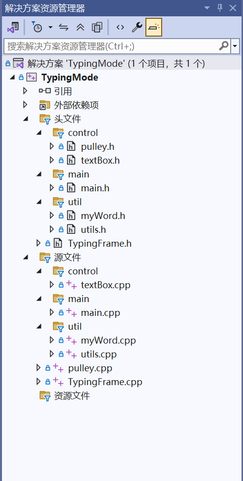
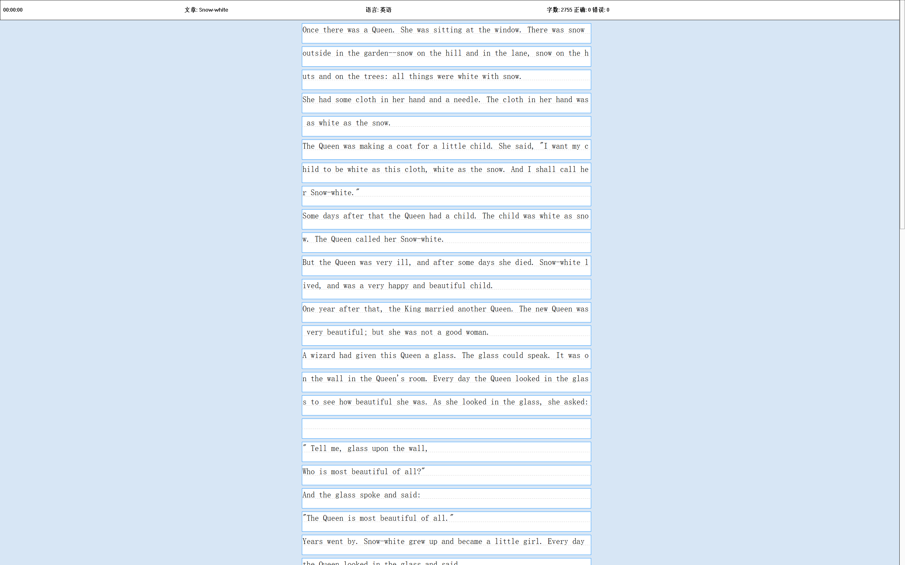
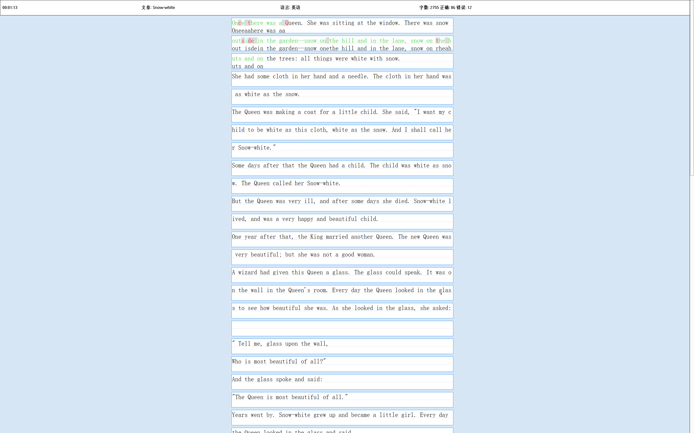
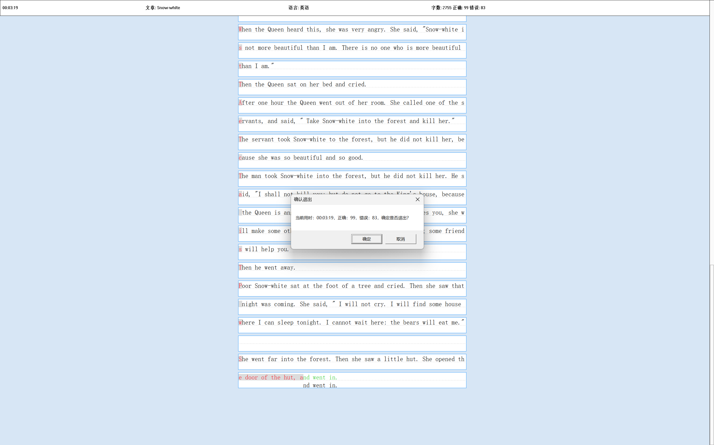
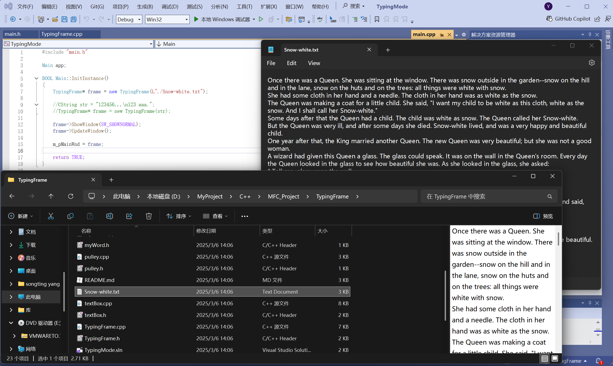

MFC打字练习项目
相关资源
你可以点击以下链接查看和下载相关资源：
练习文本文件（Snow-white.txt）项目源码可在GitHub仓库查看：
GitHub项目地址项目简介
这是一个基于MFC（Microsoft Foundation Classes）开发的打字练习程序，旨在帮助用户提高打字速度和准确性。项目实现了文本输入练习、实时错误检测、计时统计等功能，界面简洁直观，适合各阶段打字练习者使用。
项目采用C++语言开发，使用MFC框架构建窗口界面，通过文件读取加载练习文本，并实时计算打字速度和错误率，左上角计时器计时在完成后暂停，完成打字后输出结果，可在代码中更改布尔类型设置是否允许退格删除字符。
项目解决方案文件结构：
以下是项目运行时的界面截图：
打字练习初始界面
打字练习进行中

打字结果统计
退出练习提示
代码编辑与文本文件
项目功能列表
主要功能：
- 文本文件加载与显示（支持.txt格式）
- 实时打字计时功能
- 打字正确率统计与错误标记
- 打字速度（字数/分钟）计算
- 练习进度保存与恢复
- 多语言文本支持（当前示例为英文）
技术特点：
- MFC框架下的窗口界面开发
- 文件IO操作实现文本加载
- 字符实时比对算法
- 多线程处理实现计时与输入同步
- 面向对象设计模式应用
项目技术架构
| 模块 | 功能描述 | 关键文件 |
|---|---|---|
| 界面模块 | 窗口创建、文本显示、交互控件 | TypingFrame.h/.cpp |
| 输入处理模块 | 键盘输入捕获、字符比对 | textBox.h/.cpp |
| 计时统计模块 | 时间计算、正确率统计 | myWord.h/.cpp |
| 文件操作模块 | 文本文件读取 | utils.h/.cpp |
| 主控制模块 | 程序初始化、模块协调 | main.h/.cpp |